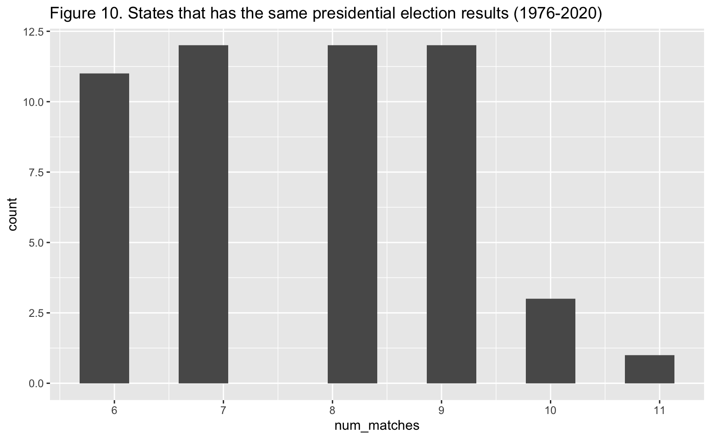

Election in the United States
Introduction
Democracy is the worst form of government except for all those other forms that have been tried from time to time. —Sir Winston Leonard Spencer Churchill
Democracy is often touted as the best system of governance, as it provides citizens with a voice in decision-making and a mechanism for holding their leaders accountable. However, the pattern of democracy varies greatly across different countries and regions, with some nations thriving under a robust democratic system while others struggle to maintain even the most basic democratic institutions. With the help of data science, we will explore the patterns of democracy across the globe. In particular, there are two democratic systems that are quite representative in the whole world.
American democracy is often seen as a model for other countries around the world. The United States is one of the oldest and most stable democracies in the world, and its democratic institutions and traditions have been emulated by many other countries. However, American democracy has also faced challenges and criticisms, particularly in recent years. The country’s deep political polarization and fairness of voting system have raised concerns about the health of American democracy.
Elections is the basement of any democratic systems around the world. They provide a mechanism for citizens to choose their representatives, participate in the political process, and hold their leaders accountable. Election is also a friendly way to use data science to analyze, as its data format is mostly numbers.
Therefore, we will look into election datasets for both countries and discover the pattern of their democratic systems in this report. In the first stage, we will focus on USA only as its information is profound enough.
Data Prepare
Data Collection
The USA election datasets we used are downloaded from Harvard Dataverse.
There are 3 datasets for the USA, their basic information are desribed
in the followring tables. We call dataset to in this way
{country}{level}{office}, for example,
usa_county_president means dataset president election in
the United States, and voting counts are stored for each county.
| Dataset | Numberof.Rows | Number.of.Columns | Version | Year..Start. | Year..End. |
|---|---|---|---|---|---|
| usa_county_president | 72617 | 12 | 20220315 | 2000 | 2020 |
| usa_state_senate | 3629 | 19 | 20210114 | 1976 | 2020 |
| usa_state_president | 4287 | 15 | 20210113 | 1976 | 2020 |
They stored in tab seperated format, we use read.table
function in R to load them.
Also, we use httr and polite R packages to
scrape data about the winners in presidential election in the United
States. Because of the Electoral College system
in the USA, the winner of population voting counts are not necessarily
the winner, so we need to scrape them from wikipedia for more
comprehensive analysis.
Dataset Clean
We want to go through each column in three datasets, including some political terms.
| Dataset | Column | Description |
|---|---|---|
| USA_President_County | {county, state}_fips | FIPS stands for ‘Federal Information Processing Standard’, ‘County FIPS’ refers to a unique code assigned by the federal government to each county in the United States and its territories |
| USA_President_County | version | Version of the datset, we use the newest (20220315) |
| USA_President_County | mode | Voting Methods |
| USA_Senate_State | state_cen | State Code for the US Census Bureau’s geographic census center |
| USA_Senate_State | state_ic | State identification code used by the Federal Election Commission (FEC) to identify political committees based in a particular state |
| USA_Senate_State | writein | An voting option where a voter can manually write in the name of a candidate they wish to vote for, rather than selecting a pre-printed name on the ballot |
| USA_Senate_State | stage | Stages of an election (general, primary, runoff) |
| USA_Senate_State | special | Special elections fill vacancies that occur when a member of the House of Representatives dies or resigns before the biennial general election |
And also the data clean procedures:
- Drop data points that are not useful
- Unofficial election results
- Invalid Ballot
- Columns that only contain a single value (See the table)
| Dataset | Columns |
|---|---|
| usa_county_president | office, version |
| usa_state_senate | office, district, mode, version |
| usa_state_president | office, version, notes |
Convert data types to numeric/boolean if possible
We also clean up the election winner dataset (scraped from wikipedia) to contains two columns only for simplicity, the year of the elelction and the winning party.
| year | national_DEMOCRAT_win |
|---|---|
| 1976 | TRUE |
| 1980 | FALSE |
| 1984 | FALSE |
| 1988 | FALSE |
| 1992 | TRUE |
| 1996 | TRUE |
| 2000 | FALSE |
| 2004 | FALSE |
| 2008 | TRUE |
| 2012 | TRUE |
| 2016 | FALSE |
| 2020 | TRUE |
- Merge Datasets that shared the same attributes for easier future
analysis
usa_president_result: A dataset that contains president election result in both state and county level. Notice that, for data point in state level, we setcounty_nameto beNaNfor simplicty.usa_state_level_result: A dataset that contains both senate and presidential election results, but only in state level.
| year | state | candidate | party_detailed | candidatevotes | totalvotes | office |
|---|---|---|---|---|---|---|
| 1976 | ARIZONA | SAM STEIGER | REPUBLICAN | 321236 | 741210 | US SENATE |
| 1976 | ARIZONA | WM. MATHEWS FEIGHAN | INDEPENDENT | 1565 | 741210 | US SENATE |
| 1976 | ARIZONA | DENNIS DECONCINI | DEMOCRAT | 400334 | 741210 | US SENATE |
| 1976 | ARIZONA | ALLAN NORWITZ | LIBERTARIAN | 7310 | 741210 | US SENATE |
| 1976 | ARIZONA | BOB FIELD | INDEPENDENT | 10765 | 741210 | US SENATE |
| year | state | county_name | candidate | party | candidatevotes | totalvotes | office | county_fips |
|---|---|---|---|---|---|---|---|---|
| 2000 | ALABAMA | AUTAUGA | AL GORE | DEMOCRAT | 4942 | 17208 | US PRESIDENT | 1001 |
| 2000 | ALABAMA | AUTAUGA | GEORGE W. BUSH | REPUBLICAN | 11993 | 17208 | US PRESIDENT | 1001 |
| 2000 | ALABAMA | AUTAUGA | RALPH NADER | GREEN | 160 | 17208 | US PRESIDENT | 1001 |
| 2000 | ALABAMA | AUTAUGA | OTHER | OTHER | 113 | 17208 | US PRESIDENT | 1001 |
| 2000 | ALABAMA | BALDWIN | AL GORE | DEMOCRAT | 13997 | 56480 | US PRESIDENT | 1003 |
- Create a new dataframe winning party in each county/state by comparing votes.
Data Exploration
Data exploration of USA election data can provide valuable insights into the patterns and trends of American voting behavior. By analyzing various factors such as voter turnout, demographic characteristics, and geographic distribution of votes, we can gain a deeper understanding of how elections are won and lost in the United States. We are going to perform the data exploration through answering the following questions.
- Are there any minor political parties in the USA, what is their importance through out the years?
- What is the temporal dynamics or patterns of thes elections?
- What are some “battle states”, “bellwether states”, “safe states” in the elections?
These questions will cover 3 perspectives of the elections: organizational, temporal and spatial.
Minor Political Parties
In the United States, there are a number of minor political parties that operate alongside the two major parties, the Democratic and Republican parties. These minor parties often represent specific ideologies or issues that are not fully addressed by the major parties. It is commmonly argued that these parties generally have little chance of winning any elections.
From the figure 1, we can tell that there were more than 20 parties particpating in every election. The peak number of parties participating elections would be above 40. Notice that this figure includes both senate and presidential election, so there is some fluncation pattern. We can tell from this pattern that more parties participating in the presidential elections than the senate elections.
Firgure 2 depecits the proportion of votes that the minor parties got from the senate elections. From this figure, we can tell that despite more than 20 parties participating in the election, but it is hard for them to get even more than 1% population votes. So we can verify that minor parties are mostly negligible.
Firgure 3 depecits the voting count of the minor parties got from the presidential elections. Surprisingly, in 1992, minor party candidates got about 20,000,000 population votes, which is an outlier in this figure. And we want to look into this year in details.
| party_detailed | total | candidate |
|---|---|---|
| LIBERTARIAN | 280848 | MARROU, ANDRE |
| INDEPENDENT | 19829462 | PEROT, ROSS |
| REPUBLICAN | 38798913 | BUSH, GEORGE H.W. |
| DEMOCRAT | 44856747 | CLINTON, BILL |
 From table
7, we can tell that independent candidate Perot Ross got 19,829,462
population votes in total. He was a businessman and political candidate.
He focused on reducing the national debt, promoting free trade, and
government reform. From this, we can tell that these issues are very
trendy at that time. This campaign served as a notable example of
third-party candidates in American politics.
From table
7, we can tell that independent candidate Perot Ross got 19,829,462
population votes in total. He was a businessman and political candidate.
He focused on reducing the national debt, promoting free trade, and
government reform. From this, we can tell that these issues are very
trendy at that time. This campaign served as a notable example of
third-party candidates in American politics.
In general, despite the limited success in winning elections, minor parties and independent candidates have had an impact on American politics by raising awareness about specific issues and pushing the major parties to adopt certain policies or take a stand on certain issues. There are outliers like Perot Ross who could take advantage of political situation and personal charisma, wrote a remarkable chapter in the United States democratic history.
Dynamics of Elections
This part focus on temporal dynamic of election result using map. The temporal dynamic of US elections refers to how the patterns and behaviors of voters, campaigns, and outcomes change over time across various election cycles. Understanding the temporal dynamics of US elections is important for predicting and interpreting election outcomes, as well as for explaining the success or failure of the democracy in the United States.
Presidential Election

The animation 1 is a heatmap that visualized dynamics of presidential election results by each state. The color indicates the the difference voting proportions between the democratic party and the republian party. The deeper color it has, the more votes democratic party won. In general, we can see that the dynamics of election results differed state by state. It is affected by both big weather in the election year and the local condition itself. From example, if we zoom in 1984 presidential election, the whole map is in a light color, which means the republican party won this election by a landslide.
When we look into 1984, President Ronald Reagan win re-election in a landslide over Democratic challenger Walter Mondale. Reagan won 49 out of 50 states and carried 58.8% of the popular vote. The election is notable for being one of the largest electoral landslides in American history.
As the heatmap is plot with continous color (by voting proportion difference), we can tell if the transitions between elections are smooth. In general, the transitions are continous, as there is no big jump from light color to deep color in a single time stamp. And the transitions (not the result) of each state in general formed and matched with the whole country.
The animation 2 is visualized dynamics of presidential election results by each state, with only the information about the winner included. One interesting observation is that if a state changed its election outcome (for example, red->blue), it is very likely that its neighboring states also changed their outcome in this election. Or its neighboring states have already been in blue color the previous election result.
From this, we may conclude that the political weather is in one state is highly correlated with its neighboring states. States may share political and social ties with their neighbors, such as common cultural backgrounds, shared histories, or migration patterns.
Senate Election
In this section, we ploted population voting count in the whole country in bar plots. Figure 4.1 is for the presidential election, and figure 4.2 is for the senate election. We can tell that after 2008, democratic party always gain more population votes (not necessarily won) in presidential election. And we can also see a increasing trend of total voting population in the presidential election.
As for the senate election, we can see that different states held election depending on depending on different year. We did not group them, and this is one limitation of this data analysis. But we can still tell that democratic parties take more advantage in recent year, and this is a question worthwhile to investigate in.
Midterms
In the United States, a midterm election is a type of election that occurs halfway through the four-year term of a sitting President. Midterm elections are held between two presidential elections, and they serve as an opportunity for voters to elect members of Congress, including all 435 seats in the House of Representatives and one-third of the 100 seats in the Senate. In this data analysis, we focus on the Senate election part. For example, 2016 senator election is a midterm for 2014 ~ 2018 presidency.
Midterm elections are an important part of the American political system, as they provide an opportunity for voters to weigh in on important issues and shape the direction of the country for the remainder of the President’s term. By looking at midterm elections, we can see if people are generally satisfied with the governance in past two years.
In figure 5, we plotted number of states that were flipped-over in the midterm election. That is, their midterm senator election result is different with the presidential election results. And we can tell that the number of flipping over states is increasing with the time. In general, there are about 20 states got flipped over in midterm elections.
Also, from figure 6 and animation 3, we see the geographic trend of flipping over in the midterm elections. In general, states had high chances to be flipped over in the midterm elections. The different voting system and strategy between presidential election could be one reason, people always argue the so-called “Presidential Penalty”: the tendency for voters to hold the President’s party accountable for the country’s problems and express their dissatisfaction at the ballot box.
Bellwether states, Battle States, Safe States
The USA is a federal republic consisting of 50 states, each with its own unique history, culture, and identity. In election, different states tend to have different pattern. For example, California is well-known for its strong support for democratic party recent years, while Texas is like a base for republican party. We want to investigate local pattern through finding Bellwether states, Battle states, and Safe states. They are terms used to describe different categories of states in the United States during presidential elections.
Bellwether states
Bellwether states are states that have a history of accurately predicting the outcome of presidential elections. These states are considered to be representative of the overall political mood of the country and are closely watched by political analysts and strategists.
Figure 6 illustrated counties in the United States that have the same results as the presidential election in 2000-2020. We can see that most counties had 3 matches. This is not surprising, as we will see in the next section, most conties are stable (safe counties), and both democratic party and republican party won 3 elections in past 6 elections. And there 8 counties that had the same output as the national level elections (see table 8).
| state | county_name | county_fips | num_matches |
|---|---|---|---|
| DELAWARE | KENT | 10001 | 6 |
| MINNESOTA | CLAY | 27027 | 6 |
| MONTANA | BLAINE | 30005 | 6 |
| NEW HAMPSHIRE | HILLSBOROUGH | 33011 | 6 |
| NEW YORK | ESSEX | 36031 | 6 |
| NEW YORK | SARATOGA | 36091 | 6 |
| WASHINGTON | CLALLAM | 53009 | 6 |
| WISCONSIN | DOOR | 55029 | 6 |
| year | state | county_name | dem_votes | rep_votes | county_winner | national_winner | |
|---|---|---|---|---|---|---|---|
| 642 | 2000 | DELAWARE | KENT | 22790 | 24081 | Republican | Republican |
| 3851 | 2004 | DELAWARE | KENT | 23872 | 31578 | Republican | Republican |
| 7060 | 2008 | DELAWARE | KENT | 36392 | 29827 | Democratic | Democratic |
| 10269 | 2012 | DELAWARE | KENT | 35527 | 32135 | Democratic | Democratic |
| 13478 | 2016 | DELAWARE | KENT | 33351 | 36991 | Republican | Republican |
| 16686 | 2020 | DELAWARE | KENT | 44552 | 41009 | Democratic | Democratic |
In table 9, we can take a closer look at Kent, Delaware. We can see no party can win by a landslide in every election. The structure of voting population in this county is pretty balance.
In figure 9, we plotted the locations of these counties. And surprisingly, all 8 counties are in north part of the United States. Maybe this is next question to investigate in (why these counties are all in the North, what are some common features of them).

| year | state | dem_votes | rep_votes | county_winner | national_winner | |
|---|---|---|---|---|---|---|
| 36 | 1976 | OHIO | 2009959 | 2000626 | Democratic | Democratic |
| 87 | 1980 | OHIO | 1752414 | 2206545 | Republican | Republican |
| 138 | 1984 | OHIO | 1825440 | 2678559 | Republican | Republican |
| 189 | 1988 | OHIO | 1939629 | 2416549 | Republican | Republican |
| 240 | 1992 | OHIO | 1984942 | 1894310 | Democratic | Democratic |
| 291 | 1996 | OHIO | 2148222 | 1859883 | Democratic | Democratic |
| 2459 | 2000 | OHIO | 2183628 | 2350363 | Republican | Republican |
| 5668 | 2004 | OHIO | 2741165 | 2859764 | Republican | Republican |
| 8877 | 2008 | OHIO | 2940044 | 2677820 | Democratic | Democratic |
| 12086 | 2012 | OHIO | 2827621 | 2661407 | Democratic | Democratic |
| 15295 | 2016 | OHIO | 2394164 | 2841005 | Republican | Republican |
| 18502 | 2020 | OHIO | 2679165 | 3154834 | Republican | Democratic |
Figure 10 and Table 10 illustrated the bellwether states (in real state level). From figure 10, we can see all states matched at at least 6 national level election outcomes. And most of them had 6-9 matches. There is only one lucky state that matched every outcome from 1976-2020. Ohio is an important state is a key swing state in presidential elections. It has a diverse population, with urban, suburban, and rural areas, and a mix of conservative and liberal voters. This has made Ohio a track record of accurately predicting the outcome of presidential elections.
Battle States, Safe States
A “safe state” is a state where one political party consistently wins the majority of votes in presidential elections. These states are often referred to as “solid” or “secure” for one party. On the other hand, a “battle state” is a state where the outcome of the election is less predictable and where the two major political parties are competitive in terms of vote share. Notice that “battle state” is similar to “bellwether states” given the swing presidential election results recent years.
In this section, we define a “turn-over”. A “turn-over” means the election result got flipped over. Let’s say from year 1-5, the winning party for state X is D, D, R, R, D, the number of turn-overs is 2 (2nd year -> 3rd year; 4th year -> 5th year). And we use this quantity to determine if a state is battle ground or a safe state.
Figure 11 illustrated distribution of number of turn-overs in each county in presidential election. The result is straightforward that most counties only voted for one party from 2000-2020 and had no turn-overs.
We visualized their location in Figure 12. Not surprisingly, the middle part if covered with red, but boundaries are covered with blue. This means most part of the United States has been stablized in county level.
In figure 13, we illustrated distribution of number of turn-overs in each state in presidential election. We can say that most parties did not have any turn overs. Once a state has established a consistent voting pattern, it can be self-reinforcing, as voters tend to identify with a particular party and vote accordingly in future elections.
| year | county_name | state | dem_votes | rep_votes | county_winner | national_winner | |
|---|---|---|---|---|---|---|---|
| 700 | 2000 | PINELLAS | FLORIDA | 200630 | 184825 | Democratic | Republican |
| 3909 | 2004 | PINELLAS | FLORIDA | 225460 | 225686 | Republican | Republican |
| 7118 | 2008 | PINELLAS | FLORIDA | 248299 | 210066 | Democratic | Democratic |
| 10327 | 2012 | PINELLAS | FLORIDA | 239104 | 213258 | Democratic | Democratic |
| 13536 | 2016 | PINELLAS | FLORIDA | 233701 | 239201 | Republican | Republican |
| 16744 | 2020 | PINELLAS | FLORIDA | 277450 | 276209 | Democratic | Democratic |
| year | state | dem_votes | rep_votes | county_winner | national_winner | |
|---|---|---|---|---|---|---|
| 1192 | 2000 | IOWA | 638517 | 634373 | Democratic | Republican |
| 4401 | 2004 | IOWA | 741898 | 751957 | Republican | Republican |
| 7610 | 2008 | IOWA | 828940 | 682379 | Democratic | Democratic |
| 10819 | 2012 | IOWA | 822544 | 730617 | Democratic | Democratic |
| 14028 | 2016 | IOWA | 653669 | 800983 | Republican | Republican |
| 17236 | 2020 | IOWA | 759061 | 897672 | Republican | Democratic |
Among all these “safe states”, Iowa and Pinellas, Florida are two outliers in state level and county level. In table 11 and 12, we saw their presidential election results from 2000-2020. Although they are not bellwether states (they changed, but in an opposite way). We can also see that no party can win by a large amount too.
The USA and many other democratic countries had the trend that states/counties consistently vote for the same party, this could lead to the trend a lack of balance in the government. Additionally, political polarization and the tendency of people to seek out information that confirms their existing beliefs can make it difficult to bridge the divide between parties and promote a diversity of perspectives.
Conclusions
In this report, we have completed the data prepare and data exploration of the United States election data through answering three key questions. Through the data exploration, we had a better understanding on each level of the election system and its temporal and spatial dynamics. We have also learned about the recent events in the elections including famous politicians and social issues.
We have some main findings on election dynamics. Two major parties are still dominating elections most of times, where other independent candidates or minor parties were not able to change the status quo. In recent election, the Democratic party was having more population votes, but due to the electoral college system, this advantage may not turn into the real victory. There are some patterns we can tell from the change of the election map. From example, the changes of voting count were “continuous” and neighboring regions were more likely to have impacts on each other. The majority of the states and the counties are “safe states”, only a few regions are really making a difference to the national level election results.
Despite of all these findings, the American election system is a complex and multi-layered process that can be difficult to fully understand just like the democratic system itself.
Limitations and Future Steps
There are many limitations in this report. I will list the most important ones. First, most of the findings focus on the population winner of the election, but it is the electoral college system determined the winner. Second, different states held their senator elections in different years (because it is held every 6 years), however, we did not group them by their year of election, some results could be misleading. Third, we focus mostly on which party won the election instead of the candidates which could be very important in determining the election outcomes.
In the future, we want to look into above limitations. Also, compare and contrast the results between the United States and India. Indian democracy is the world’s largest democracy and has been an important model for many other countries and has inspired other developing countries, particularly in South Asia and Africa, and the country has been active in promoting democratic values and institutions globally. However, according to some analysis, Indian’s political system is failing due to corruption, caste discrimination, religious tensions, and electoral violence. By looking at two examples, we will gain a more comprehensive view on the world’s democracy.